2025 National 5 Mathematics - Paper 2 questions
Source: Scottish Qualifications Authority (SQA) / Qualifications Scotland. This is a StemInteract HTML companion, not an official HTML edition. Selectable text is supplied alongside original page images. Use the images or original PDF for equations, powers, fractions, vector notation, tables and diagrams; text extraction cannot fully preserve mathematical layout.
Jump to a question
PDF page 1
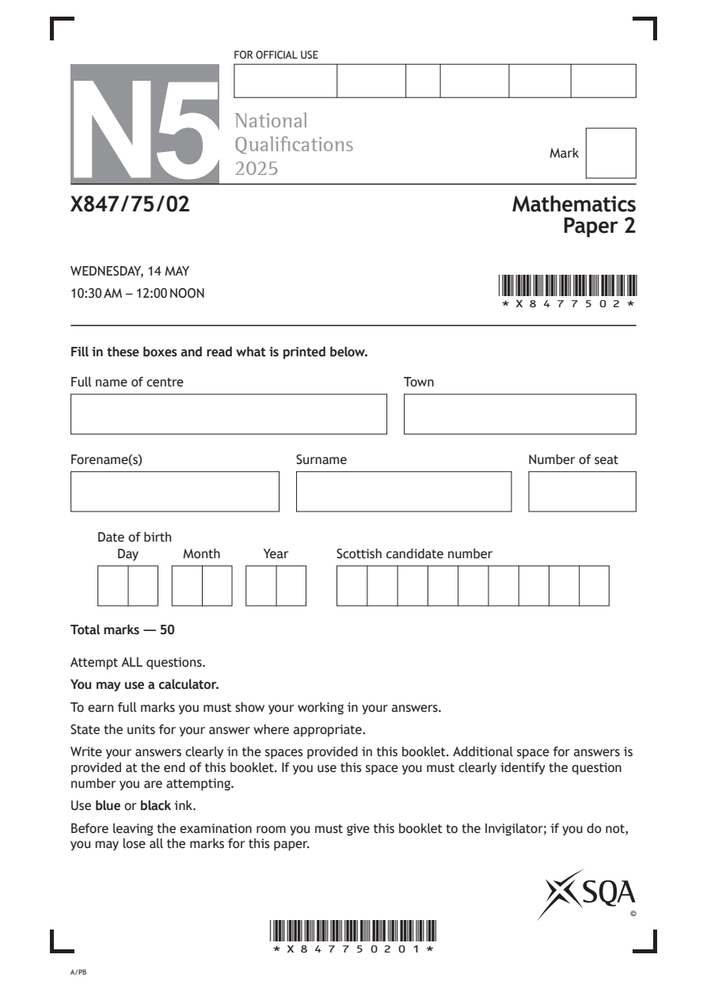
Selectable page text
FOR OFFICIAL USE
N5
National
Qualications
Mark
2025
X847/75/02 Mathematics
Paper 2
WEDNESDAY, 14 MAY
10:30 AM – 12:00 NOON
*X8477502*
Fill in these boxes and read what is printed below.
Full name of centre Town
Forename(s) Surname Number of seat
Date of birth
Day Month Year Scottish candidate number
Total marks — 50
Attempt ALL questions.
You may use a calculator.
To earn full marks you must show your working in your answers.
State the units for your answer where appropriate.
Write your answers clearly in the spaces provided in this booklet. Additional space for answers is
provided at the end of this booklet. If you use this space you must clearly identify the question
number you are attempting.
Use blue or black ink.
Before leaving the examination room you must give this booklet to the Invigilator; if you do not,
you may lose all the marks for this paper.
©
*X847750201*
A/PBPDF page 2
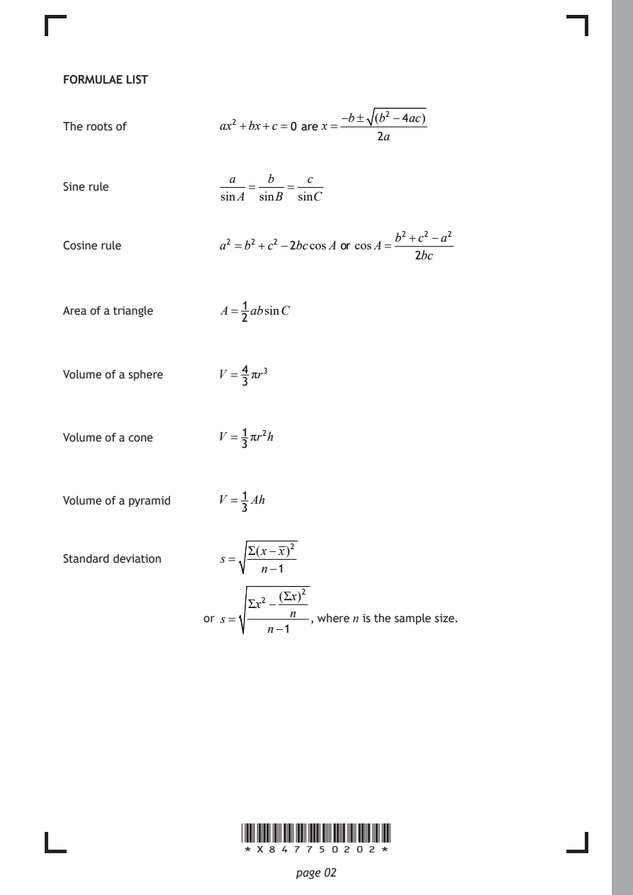
Selectable page text
FORMULAE LIST
−b± (b² −4ac)
The roots of ax² +bx+c=0 are x=
2a
a b c
Sine rule = =
sinA sinB sinC
b² +c²−a²
Cosine rule a² =b²+c² −2bccosA or cosA=
2bc
1
Area of a triangle A= absinC
2
4
Volume of a sphere V = πr³
3
1
Volume of a cone V = πr²h
3
1
Volume of a pyramid V = Ah
3
Σ(x−x)²
Standard deviation s =
n−1
(Σx)²
Σx² −
n
or s = , where n is the sample size.
n−1
*X847750202*
page 02PDF page 3
Paper 2, Question 1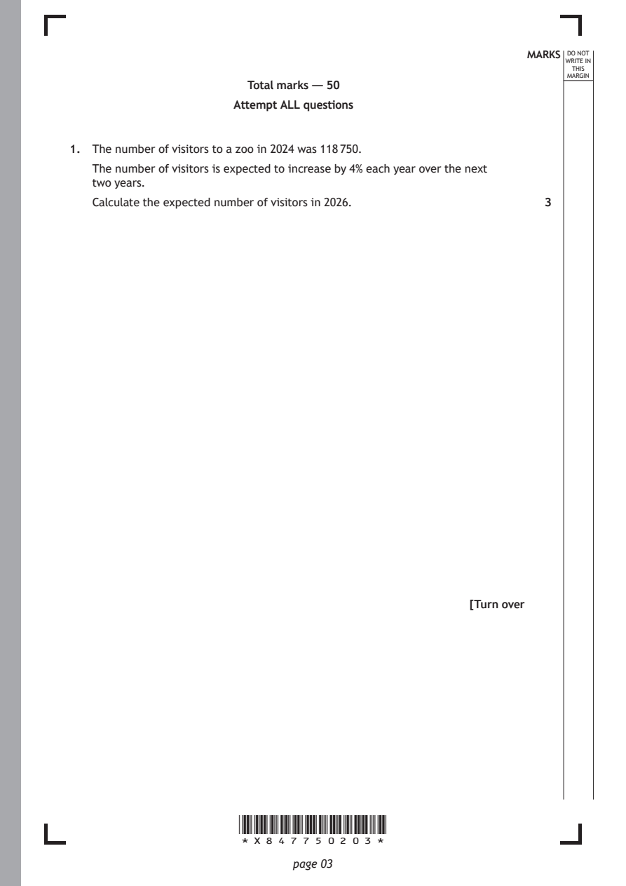
Selectable page text
MARKS _{W}^{D}_{R}^{O}_{I} _{T}^{N}OT
E IN
THIS
MARGIN
Total marks — 50
Attempt ALL questions
1. The number of visitors to a zoo in 2024 was 118 750.
The number of visitors is expected to increase by 4% each year over the next
two years.
Calculate the expected number of visitors in 2026. 3
[Turn over
*X847750203*
page 03PDF page 4
Paper 2, Question 2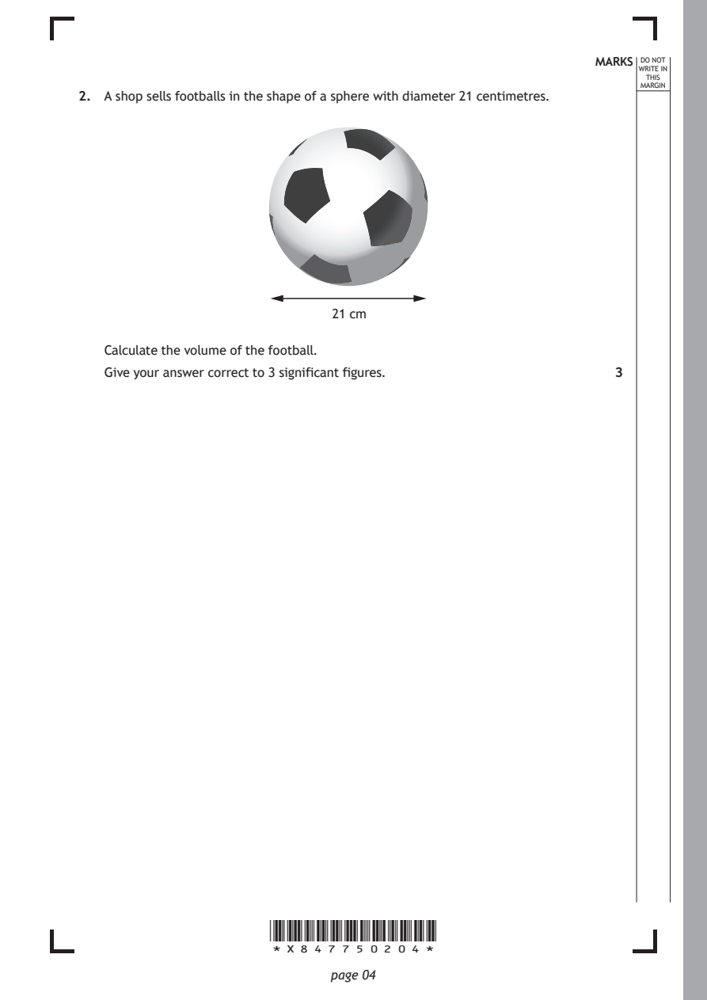
Selectable page text
MARKS _{W}^{D}_{R}^{O}_{I} _{T}^{N}OT
E IN
THIS
MARGIN
2. A shop sells footballs in the shape of a sphere with diameter 21 centimetres.
21 cm
Calculate the volume of the football.
Give your answer correct to 3 significant figures. 3
*X847750204*
page 04PDF page 5
Paper 2, Question 3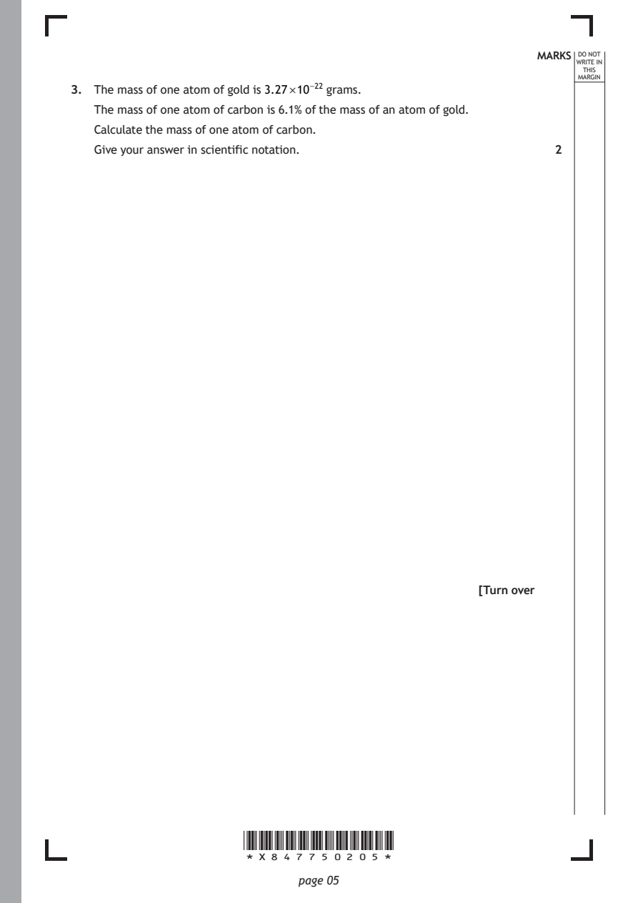
Selectable page text
MARKS _{W}^{D}_{R}^{O}_{I} _{T}^{N}OT
E IN
THIS
MARGIN
3. The mass of one atom of gold is 3.27×10⁻²² grams.
The mass of one atom of carbon is 6.1% of the mass of an atom of gold.
Calculate the mass of one atom of carbon.
Give your answer in scientific notation. 2
[Turn over
*X847750205*
page 05PDF page 6
Paper 2, Question 4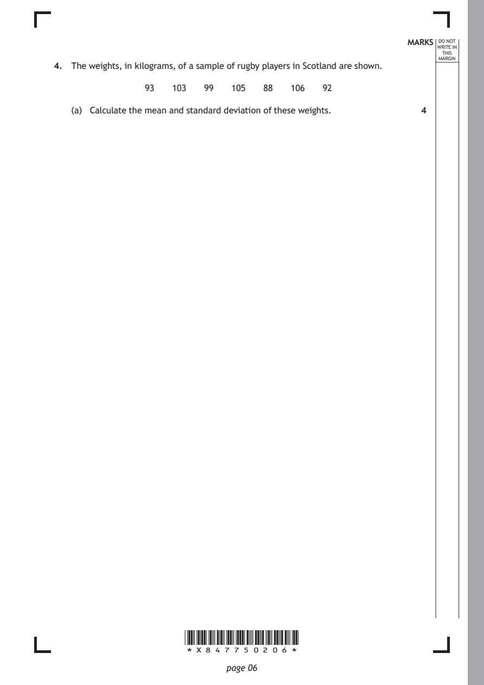
Selectable page text
MARKS _{W}^{D}_{R}^{O}_{I} _{T}^{N}OT
E IN
THIS
MARGIN
4. The weights, in kilograms, of a sample of rugby players in Scotland are shown.
93 103 99 105 88 106 92
(a) Calculate the mean and standard deviation of these weights. 4
*X847750206*
page 06PDF page 7
Paper 2, Question 5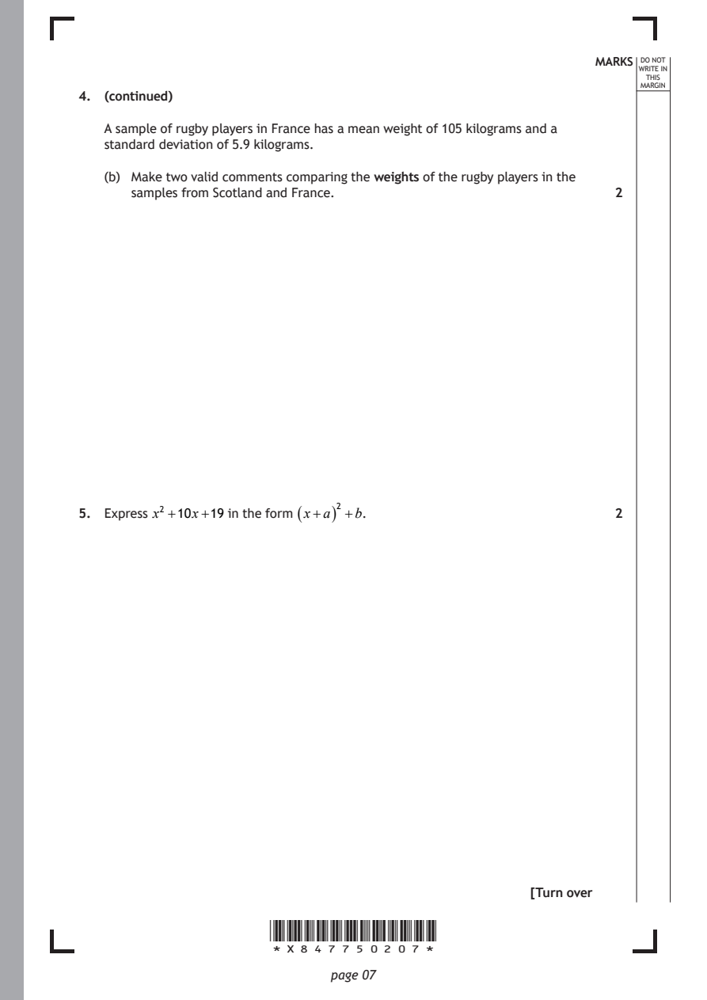
Selectable page text
MARKS _{W}^{D}_{R}^{O}_{I} _{T}^{N}OT
E IN
THIS
MARGIN
4. (continued)
A sample of rugby players in France has a mean weight of 105 kilograms and a
standard deviation of 5.9 kilograms.
(b) Make two valid comments comparing the weights of the rugby players in the
samples from Scotland and France. 2
5. Express x² +10x+19 in the form ( x+a ) ² +b. 2
[Turn over
*X847750207*
page 07PDF page 8
Paper 2, Question 6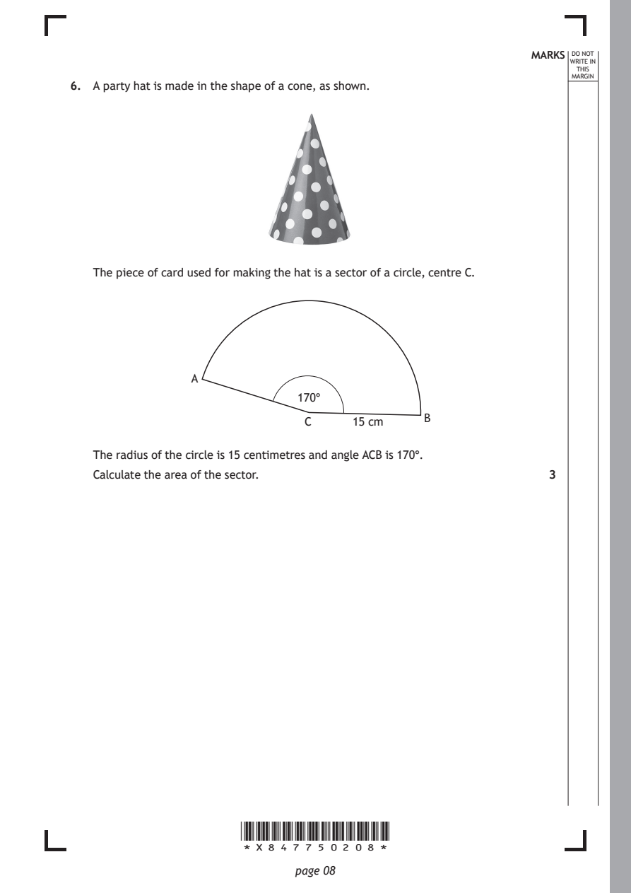
Selectable page text
MARKS _{W}^{D}_{R}^{O}_{I} _{T}^{N}OT
E IN
THIS
MARGIN
6. A party hat is made in the shape of a cone, as shown.
The piece of card used for making the hat is a sector of a circle, centre C.
A
170°
B
C 15 cm
The radius of the circle is 15 centimetres and angle ACB is 170°.
Calculate the area of the sector. 3
*X847750208*
page 08PDF page 9
Paper 2, Question 7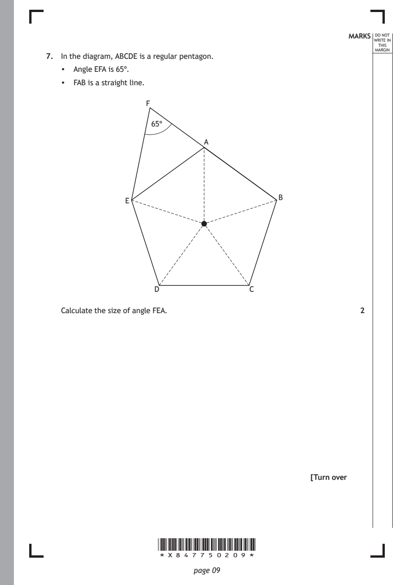
Selectable page text
MARKS _{W}^{D}_{R}^{O}_{I} _{T}^{N}OT
E IN
THIS
MARGIN
7. In the diagram, ABCDE is a regular pentagon.
• Angle EFA is 65°.
• FAB is a straight line.
F
65°
A
B
E
D C
Calculate the size of angle FEA. 2
[Turn over
*X847750209*
page 09PDF page 10
Paper 2, Question 8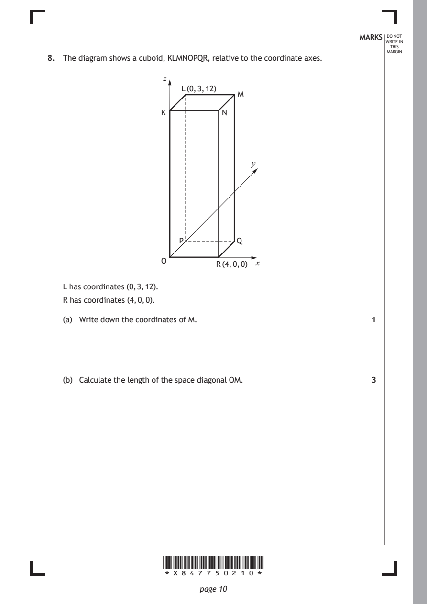
Selectable page text
MARKS _{W}^{D}_{R}^{O}_{I} _{T}^{N}OT
E IN
THIS
MARGIN
8. The diagram shows a cuboid, KLMNOPQR, relative to the coordinate axes.
z
L (0, 3, 12)
M
K N
y
P Q
O R (4, 0, 0) x
L has coordinates (0, 3, 12).
R has coordinates (4, 0, 0).
(a) Write down the coordinates of M. 1
(b) Calculate the length of the space diagonal OM. 3
*X847750210*
page 10PDF page 11
Paper 2, Question 9Selectable page text
MARKS _{W}^{D}_{R}^{O}_{I} _{T}^{N}OT
E IN
THIS
MARGIN
1
9. Change the subject of the formula B = kc² −3c to k. 3
4
[Turn over
*X847750211*
page 11PDF page 12
Paper 2, Question 10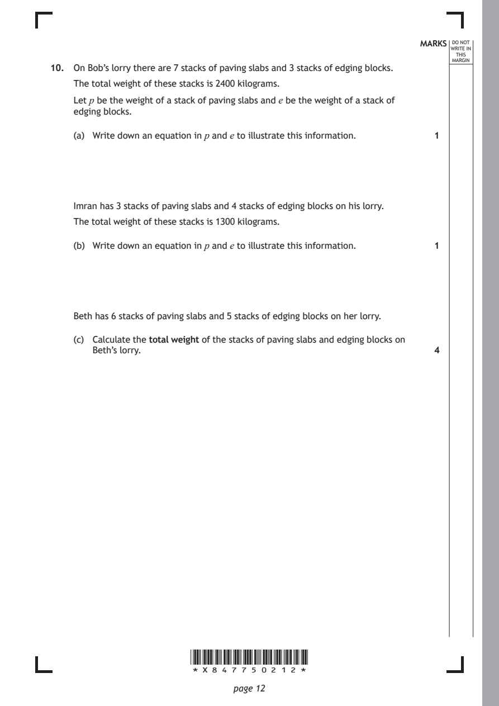
Selectable page text
MARKS _{W}^{D}_{R}^{O}_{I} _{T}^{N}OT
E IN
THIS
MARGIN
10. On Bob’s lorry there are 7 stacks of paving slabs and 3 stacks of edging blocks.
The total weight of these stacks is 2400 kilograms.
Let p be the weight of a stack of paving slabs and e be the weight of a stack of
edging blocks.
(a) Write down an equation in p and e to illustrate this information. 1
Imran has 3 stacks of paving slabs and 4 stacks of edging blocks on his lorry.
The total weight of these stacks is 1300 kilograms.
(b) Write down an equation in p and e to illustrate this information. 1
Beth has 6 stacks of paving slabs and 5 stacks of edging blocks on her lorry.
(c) Calculate the total weight of the stacks of paving slabs and edging blocks on
Beth’s lorry. 4
*X847750212*
page 12PDF page 13
Paper 2, Question 11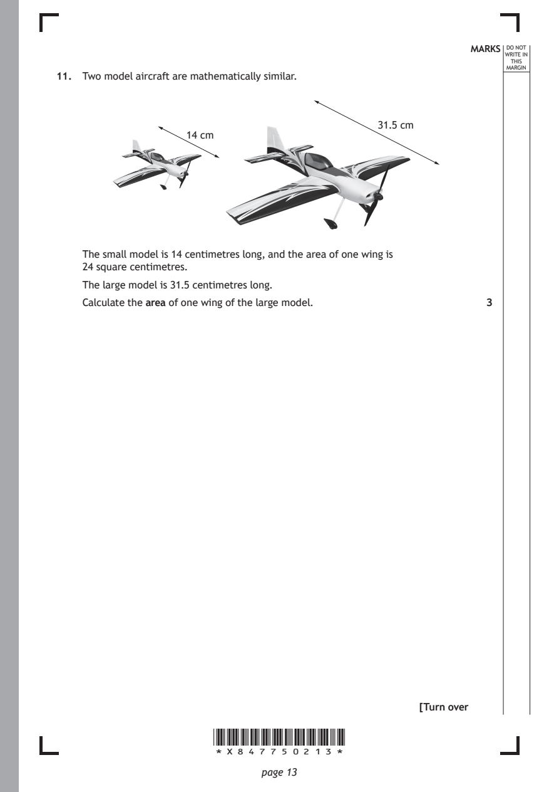
Selectable page text
MARKS _{W}^{D}_{R}^{O}_{I} _{T}^{N}OT
E IN
THIS
MARGIN
11. Two model aircraft are mathematically similar.
31.5 cm
14 cm
The small model is 14 centimetres long, and the area of one wing is
24 square centimetres.
The large model is 31.5 centimetres long.
Calculate the area of one wing of the large model. 3
[Turn over
*X847750213*
page 13PDF page 14
Paper 2, Question 12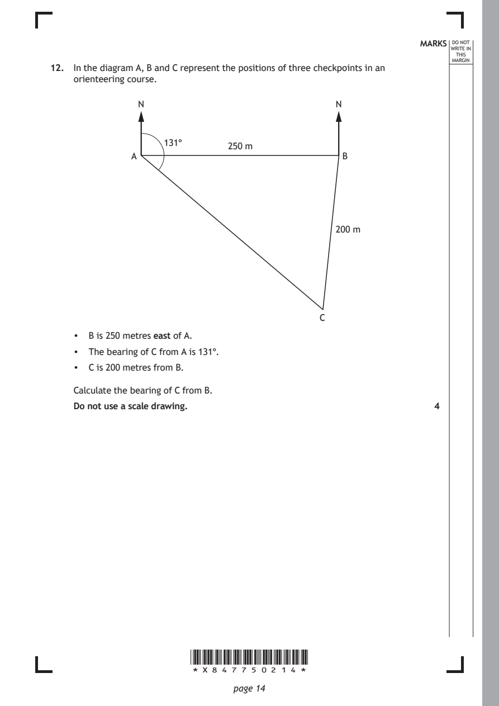
Selectable page text
MARKS _{W}^{D}_{R}^{O}_{I} _{T}^{N}OT
E IN
THIS
MARGIN
12. In the diagram A, B and C represent the positions of three checkpoints in an
orienteering course.
N N
131°
250 m
A B
200 m
C
• B is 250 metres east of A.
• The bearing of C from A is 131°.
• C is 200 metres from B.
Calculate the bearing of C from B.
Do not use a scale drawing. 4
*X847750214*
page 14PDF page 15
Paper 2, Question 13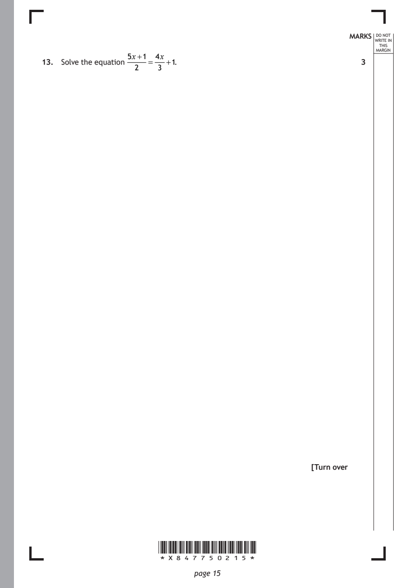
Selectable page text
MARKS _{W}^{D}_{R}^{O}_{I} _{T}^{N}OT
E IN
THIS
MARGIN
5x+1 4x
13. Solve the equation = +1. 3
2 3
[Turn over
*X847750215*
page 15PDF page 16
Paper 2, Question 14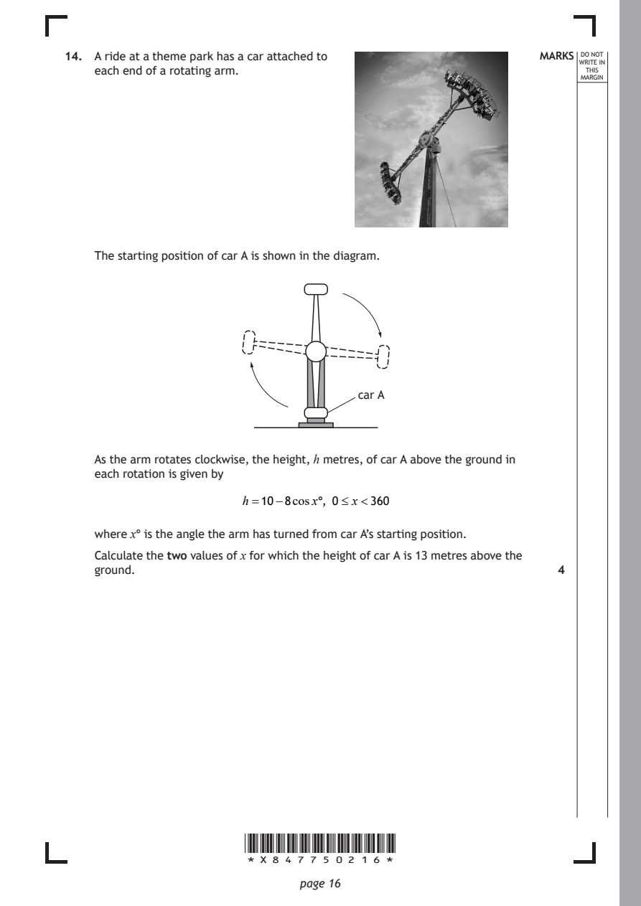
Selectable page text
14. A ride at a theme park has a car attached to MARKS _{W}^{D}_{R}^{O}_{I} _{T}^{N}OT
E IN
each end of a rotating arm. THIS
MARGIN
The starting position of car A is shown in the diagram.
car A
As the arm rotates clockwise, the height, h metres, of car A above the ground in
each rotation is given by
h=10−8cosx°, 0≤ x<360
where x° is the angle the arm has turned from car A’s starting position.
Calculate the two values of x for which the height of car A is 13 metres above the
ground. 4
*X847750216*
page 16PDF page 17
Paper 2, Question 15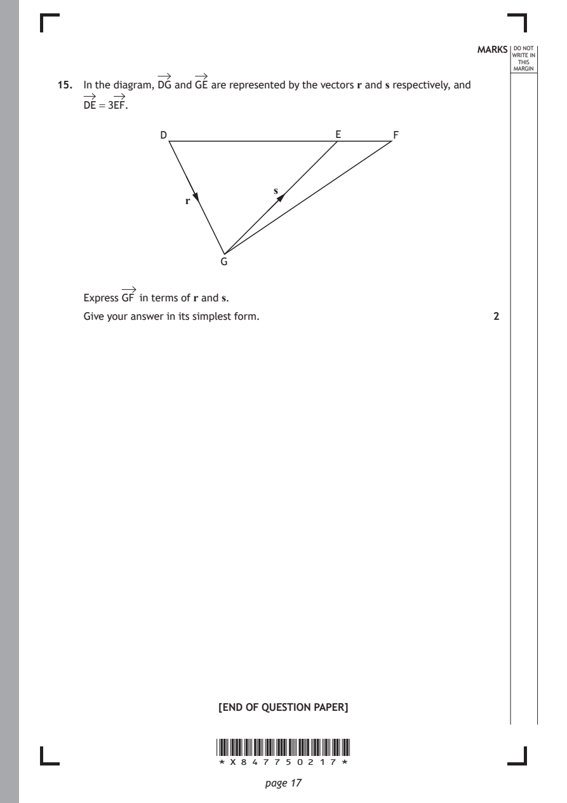
Selectable page text
MARKS _{W}^{D}_{R}^{O}_{I} _{T}^{N}OT
E IN
THIS
MARGIN
15. In the diagram, DG and GE are represented by the vectors r and s respectively, and
DE = 3EF.
D E F
s
r
G
Express GF in terms of r and s.
Give your answer in its simplest form. 2
[END OF QUESTION PAPER]
*X847750217*
page 17PDF page 18
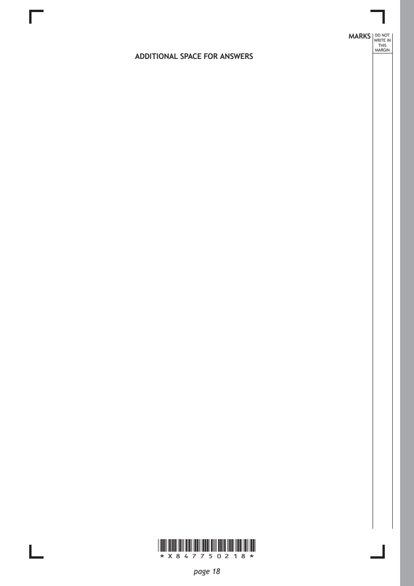
Selectable page text
MARKS _{W}^{D}_{R}^{O}_{I} _{T}^{N}OT
E IN
THIS
MARGIN
ADDITIONAL SPACE FOR ANSWERS
*X847750218*
page 18PDF page 19
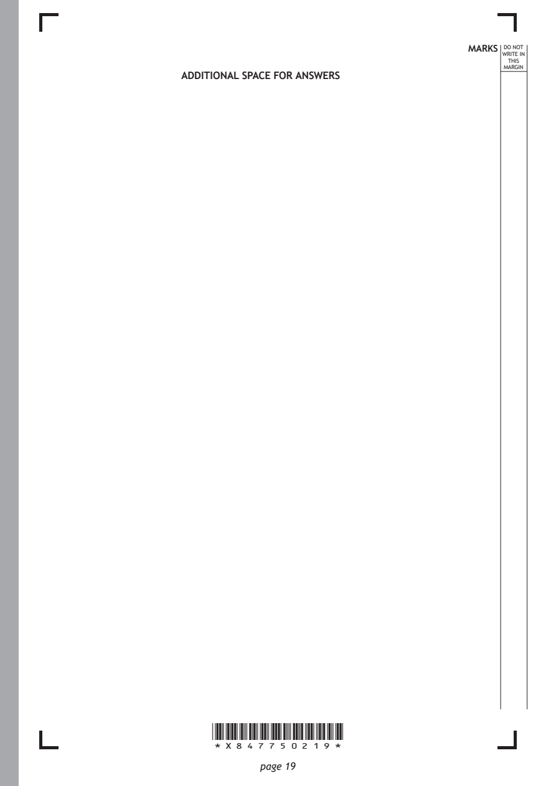
Selectable page text
MARKS _{W}^{D}_{R}^{O}_{I} _{T}^{N}OT
E IN
THIS
MARGIN
ADDITIONAL SPACE FOR ANSWERS
*X847750219*
page 19PDF page 20
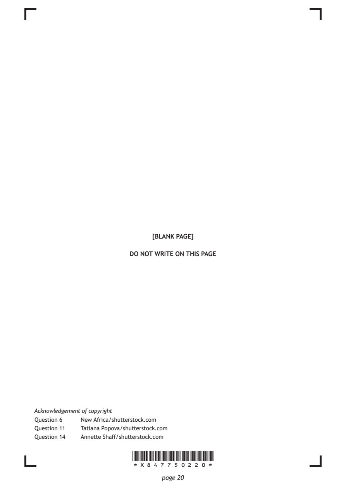
Selectable page text
[BLANK PAGE]
DO NOT WRITE ON THIS PAGE
Acknowledgement of copyright
Question 6 New Africa/shutterstock.com
Question 11 Tatiana Popova/shutterstock.com
Question 14 Annette Shaff/shutterstock.com
*X847750220*
page 20